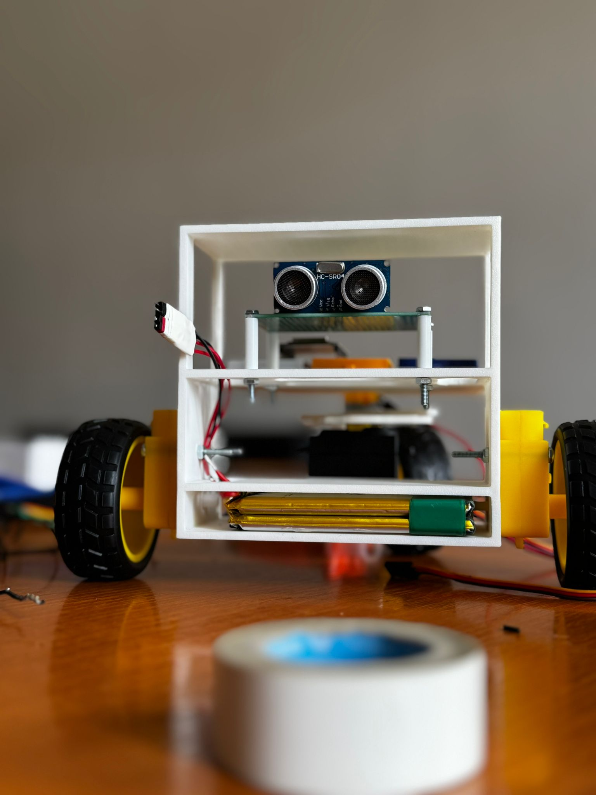

Rata Darius-Marian
I create things — and then I give them life.
Cybersecurity enthusiast and developer. Most of what I build ends up moving, blinking, or being exploited on purpose: 3D-printed robotics, security labs built to be broken, web tools, and the occasional game. I care about understanding how a thing actually works well enough to take it apart.
Currently studying Computer and Information Technology at UPB (Politehnica București), and competing in CTFs and national cybersecurity olympiads.

What I work on
Four things I keep coming back to.
🔐 Cybersecurity
Web application security, CTFs, and deliberately vulnerable labs. I'm interested in the unglamorous parts — access control, session handling, and bugs that hide in plain sight next to correctly-written code.
⚡ Electronics & Hardware
Microcontrollers, sensors, motors and PCBs — designing the physical layer that software eventually has to respect. CAD, 3D printing, and getting a servo to do exactly what it was told.
🌐 Web
PHP and small full-stack tools. I prefer boring, predictable tooling over clever abstractions — the kind of thing you can still debug at 2am.
🎮 Games
Godot and GDScript, mostly 2D. A good excuse to learn something about physics, state machines, and why your player keeps getting stuck.
Projects
Things I've built, broken, and rebuilt.

Autonomous 3-Wheel Car
A self-driving car built from scratch over three prototypes. An Arduino Nano and an ESP32 handle control, DC motors drive the wheels, and a servo runs the steering through a custom linkage and 3D-printed gear reduction. An ultrasonic sensor handles obstacle avoidance and an ESP32-CAM provides vision.
Everything physical was designed in OnShape and printed locally — the chassis, servo stand, gear sets and shield. The repository documents the full parts list, the steering mechanism, and every iteration with photos and video.
SecureBank
A deliberately vulnerable banking application built as a pentest lab. PHP 8.2 and MySQL 8 in Docker, three role tiers, and a Puppeteer bot that plays the administrator on a ten-second loop. The intended solve runs from credential files left inside the web root, through stored XSS in the staff forum, to stealing a live admin session — and the repository ships the full writeup, hints and all.
Starlight
A 2D platformer built in Godot 4.4. Coins, enemies, killzones and a slime that absolutely refuses to go away. My first real dive into game loops, collision handling and scene management.
This Portfolio
The page you're reading. Hand-written HTML and CSS on GitHub Pages — no framework, no build step, nothing to break at deploy time.
Certificates
Networking, programming and cybersecurity. Each document opens as a PDF.
-
Unbreakable 2024 — Individual
National cybersecurity competition Gold -
CCNA v7 — Introduction to Networks
Cisco Networking Academy Cisco -
CCNA v7 — Switching, Routing and Wireless Essentials
Cisco Networking Academy Cisco -
National Cyber Security Olympiad 2024 — Mention
National stage Mention -
County Cyber Security Olympiad 2025
District stage 3rd Prize -
County Cyber Security Olympiad 2024
District stage 1st Prize
About
I'm a developer and cybersecurity enthusiast with a strong focus on efficiency and practical solutions. I like creating things and giving them life — an idea on a whiteboard becomes a board, a CAD model, a firmware loop, or a full application depending on what the problem turns out to need.
Most of my projects cross disciplines. The 3-wheel car needed electronics, mechanical design and 3D printing. The security lab needed web development, Docker and an understanding of how browsers handle sessions. Working across those boundaries is the part I enjoy most, and electronics in particular is where I spend a lot of my time — microcontrollers, sensors, motors, and the endless process of getting real hardware to do what the datasheet promised.
Currently studying Computer and Information Technology at UPB, and competing in CTF competitions and national cybersecurity olympiads to keep my problem-solving sharp.
Contact
- Email: ratadarius709@gmail.com
- GitHub: github.com/RataDarius
- Instagram: @rata.rst
Open to internships, junior security roles, and collaboration on security or hardware projects.